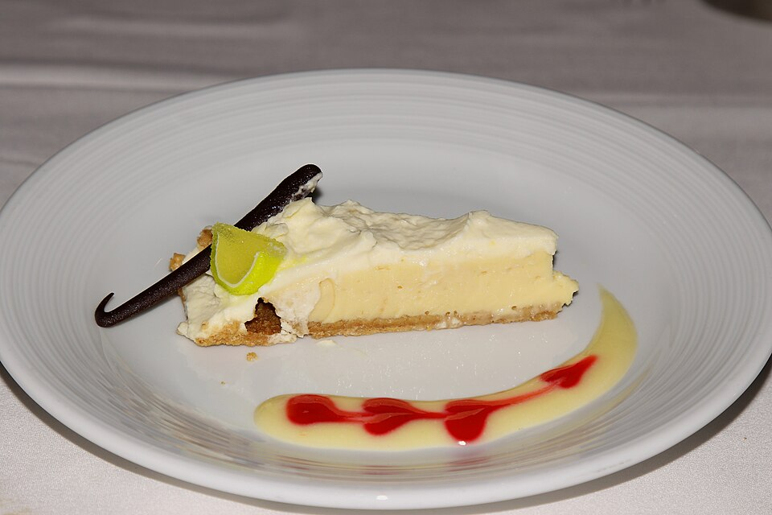

Key Lime Pie
Recipe by: Sally McKenney, sallysbakingaddiction.com

photo by: Prayitno, CC BY 2.0 https://creativecommons.org/licenses/by/2.0 via Wikimedia Commons
Ingredients
- 11 full-sheet graham crackers (about 160g)
- 1/2 cup salted macadamia nuts (about 62g, roasted)
- 2 Tablespoons granulated sugar (about 25g)
- 5 Tablespoons unsalted butter, melted (about 71g)
- 28 ounces full-fat sweetened condensed milk (two 14-ounce cans, about 793g)
- 1 cup key lime juice (about 240ml)
- 4 large egg yolks
- 1 teaspoon key lime zest
- For garnish: lime zest, quartered lime slices, macadamia nuts, whipped cream, or meringue topping